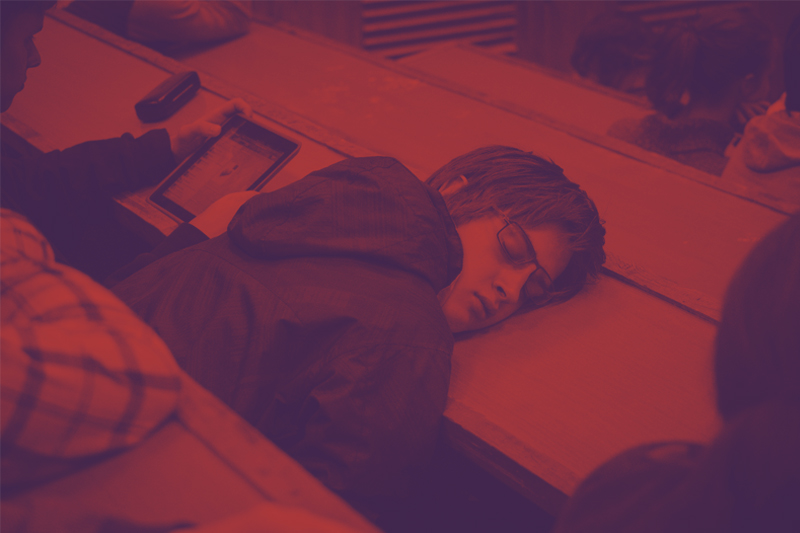
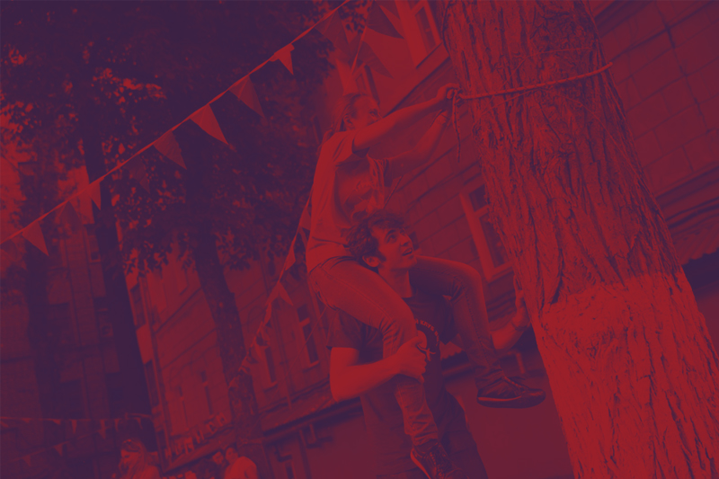

На этой странице представлены советы, короткий гайд по корпусам Вышки и карта школы дизайна
Это важные мероприятия, на которых рассказывают обо всем подробно: о скидках, рейтинге, сессиях... Также можно получить ответы на большинство учебных вопросов

На каждом предмете она разная. Исходя из формулы оценки можно понять на что делать упор в процессе учебы. Поэтому нужно узнать, чтобы не распыляться на все во время учёбы

В количестве всех заданных дз можно потеря-
ться, забыть про что-то и вспомнить в самый неподходящий момент. Поэтому обязательно все записывайте. Это не только помогает сконцентрироваться, понять, что все расписано, но и дает расслабиться, найти время для себя.
В Вышке много студенческих организаций совершенно разнообразных направлений, связанных со спортом, путешествиями, с танцами итд. Поэтому можете попробовать себя в совершенно разных сферах. Также это отличный способ обрести новые знакомства.

Накопленная оценка важна, от нее зависит поставят ли автомат. Чтобы заработать хороший накоп, надо знать формулу оценки. Доклады, работа на семинарах — все это влияет на нее.
На первом курсе при поступлении может показаться, что учеба — это важно и серьезно. Но в развлечениях себе отказывать не стоит. Нужно помнить, что есть свободное время от занятий и его можно интересно проводить.
С помощью нее вы имеете привилегии на услуги транспорта, скидки в магазинах и в аптеке.

Не нужно бояться делать ошибки, ведь как раз они помогают становиться лучшей версией себя.
